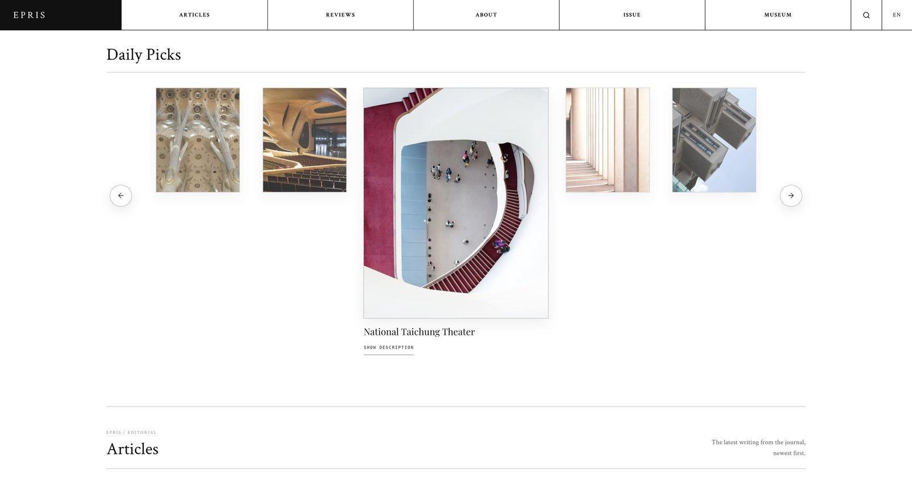
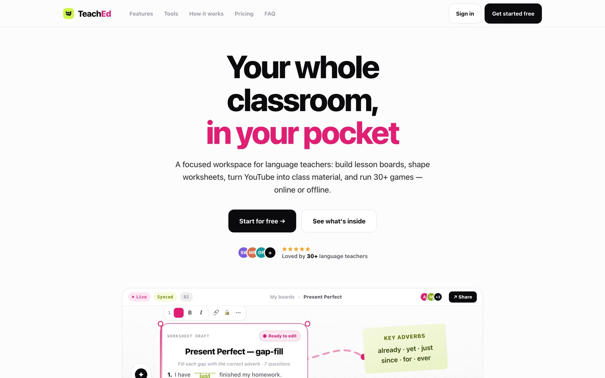
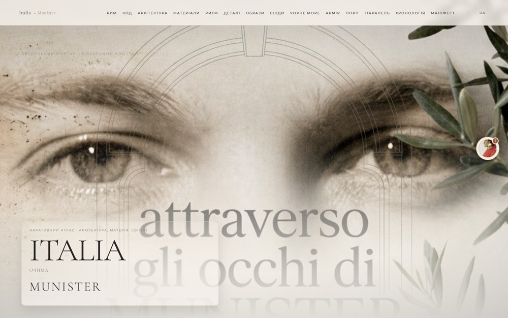
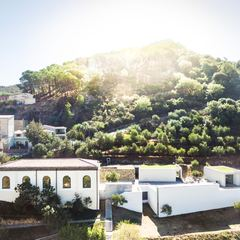

Viacheslav
Munister
I make digital systems for ideas that need to last.

Editorial platforms, retail systems and teaching tools, built end to end.
Work I run end to end
Three of nine live projects: the software, the editorial system and the operations around it.

EPRIS Journal
An independent journal on design, art and architecture. I built the publishing system behind it and authored its digital passport infrastructure: article structures, translation workflow, admin and deployment.

TeachEd
A workspace for language teachers with 51 tools: lesson boards, exercise generation, video turned into class material. I own the roadmap, architecture and release pipeline.

Italy Chapter
The visual code of Italy in proportion, light and material. A bilingual long-read with an atlas, a timeline and side-by-side comparisons, written and built alone.
Also built
Six more systems in daily use, from retail ERP to a browser radio station.
Research
29 peer-reviewed papers, 2021 to 2026, mostly in Scopus-indexed proceedings.
Applied research in industrial automation and measurement: edge and fog computing, machine learning in production processes, information and measurement systems. Mostly in Scopus-indexed proceedings.
Writing
Essays, criticism and interviews in EPRIS Journal. Seven pieces, newest first.
Souv: The Souvenir That Doesn’t Forget
Interview · Design · Zagreb
25 Aug 2026Museo Nivola: A Museum, a Village and the Memory They Share
Interview · Architecture · SardiniaRooms That Watch You Back
Critical essay · Glass · PrivacyDining Inside a Watercolour
Review · Enigma · RCR ArquitectesAgainst the Right Angle
Essay · Architecture · Engineering- 01En Quête de Patrimoine
- 02Histoire dʼen Parler
French associations researching and keeping cultural heritage close to lived places and public conversation.
A good archive does not close the past. It lets a detail catch the light, and gives someone else a way in.
Place / object / memory / interfaceSystems analysis, systems architecture, ERP design, editorial platforms, IIoT and edge, machine learning.